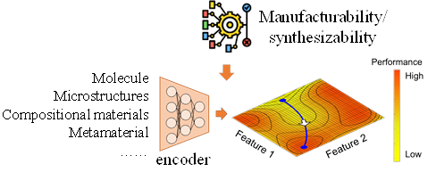

Research Direction 02
Generative co-design
Jointly designing materials, structures, and feasible realization pathways across multiple scales.

We develop generative co-design methods that jointly consider material behavior, mechanical performance, and practical feasibility from the beginning of the design process. Deep generative and graph-based models explore novel compositions, microstructures, metamaterials, and mechanical architectures, while physics-informed learning and experimentally derived constraints keep proposed solutions grounded in real behavior. By connecting process-structure-property-performance relationships across atomic, microstructural, architectural, and system scales, this research aims to translate computational concepts into high-performing, experimentally testable, and scalable material and mechanical systems.
Selected journal articles
- Wang, Z., Bray, A., Naghavi Khanghah, K., Xu, H. "Designing Connectivity-Guaranteed Porous Metamaterial Units Using Generative Graph Neural Networks." Journal of Mechanical Design, 2025. Link
- Naghavi Khanghah, K., Wang, Z., Xu, H. "Reconstruction and Generation of Porous Metamaterial Units via Variational Graph Autoencoder and Large Language Model." Journal of Computing and Information Science in Engineering, 2025. Link
- Xu, L., Wang, Z., Rodgers, T., Liu, D., Tran, A., Xu, H. "Exascale Granular Microstructure Reconstruction in 3D Volumes of Arbitrary Geometries with Generative Learning." Acta Materialia, 2025. Link
- Wang, Z., Xu, H. "Manufacturability-Aware Deep Generative Design of 3D Metamaterial Units for Additive Manufacturing." Structural and Multidisciplinary Optimization, 2024. Link
- Wang, Z., Xian, W., Li, Y., Xu, H. "Embedding Physical Knowledge in Deep Neural Networks for Predicting the Phonon Dispersion Curves of Cellular Metamaterials." Computational Mechanics, 2023. Link
- Wang, Z., Xian, W., Baccouche, M. R., Lanzerath, H., Li, Y., Xu, H. "Design of Phononic Bandgap Metamaterials Based on Gaussian Mixture Beta Variational Autoencoder and Iterative Model Updating." Journal of Mechanical Design, 2022. Link
- Xu, L., Hoffman, N., Wang, Z., Xu, H. "Harnessing Structural Stochasticity in the Computational Discovery and Design of Microstructures." Materials & Design, 2022. Link
- Kheybari, M., Wang, Z., Xu, H., Bilal, O. R. "Programmability of Ultrathin Metasurfaces Through Curvature." Extreme Mechanics Letters, 2022. Link